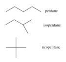

| Chapter 4.2: Single
bonds and molecular shape |
|
C–C and C–H bonds are described by molecular orbitals; calculations indicate that most of the electron density associated with these orbitals lies between the two nuclei. The C-H bonds have a length of 109 x 10-12 m (109 pm), while the C-C bond is approximately 50% longer, 154 x 10-12 m (154 pm). This is because the C-C bonding orbital is made from sp3 hybrid orbitals, which are larger than the 1s orbital that hydrogen uses to form bonds. These so-called σ (sigma) bonds have an interesting property; the atoms that they link can spin relative to each other without breaking the bond between them. |
4.1 Heterogeneous compounds |
For a C–H bond, if the H spins it would be impossible to tell, since the H atom is radially symmetric around the C-H bond axis. But if the carbons in the C-C bond of ethane spin relative to each other, then it is possible to observe different arrangements by looking down the C-C bond axis. For example: and are both representations of ethane (the C–C bond is not seen in this depiction, since you are looking straight down the C–C bond). They appear different because the arrangement of the atoms is different in space - but in fact at room temperature these two arrangements can easily interconvert by rotating around the C–C
bond. |
|
Now, an obvious problem with complex three dimensional molecules, even those made up only of hydrogen and carbon, is how to convey their structure when they must be depicted in two dimensions, like when you are writing on paper. Research indicates that students (that is, most people) have a tough time with this task, which is why we will describe various approaches here. Before we begin, we need to have some rules. Let us use the set of possible molecules that contain 5 carbon atoms and 12 hydrogen atoms - these are generically known as “pentanes”. You can begin with a piece of paper (and a pencil); how many different molecules can you draw with the composition of C5H12? Clearly C5H12 does not uniquely define the structure of the molecule – it is better to use their distinct names (pentane, isopentane, and neopentane). Each of the different molecules you have drawn have the same molecular formula but they have different shapes and, it turns out, different properties. For example, pentane has a boiling point of 308 K, whereas the boiling points of isopentane and neopentane are 301 K and and 283 K, respectively. Their shapes, rather than their elemental composition, influences the strength of the attractions between the individual molecules, which in turn influences their boiling points. We call these kinds of related compounds structural isomers - that is they have the same composition (e.g. C5H12) but their constituent atoms are connected differently to give different structures and shapes. |
|
| If we followed the logic of this approach, we could draw a more complete representation of pentane, isopentane, and neopentane as Lewis structures, but again, we are missing the three dimensionality - you might even be led to think that the molecules are actually flat, when they are much more like balls. While it is possible to make the representation a little more realistic by trying to indicate three dimensionality using the wedge and dash symbols, these structures become very complicated very fast. It is not really practical to draw out full 3D structures for larger complex molecules. |
One important skill you will need to master (or at least remember) is that “short-hand” structures (such as Lewis structures) can provide information about the 3D structure of the molecule - and as we will see - this will allow us to predict chemical and physical properties? This one more representation that you will often see used which leaves out even more information. |
 |
In the line structure, the only things that are shown are the bonds between carbons! So for example for the pentanes (C5H12) we can draw structures that omit all the symbols for atoms, and all the C-H bonds. These structures should be used with caution - it is very easy to forget atoms or bonds when they are not in the representation. But what these line structures do show very clearly is how the carbon atoms are connected, which can be very helpful at times. |
4.1
Heterogeneous compounds |
Question to answer:
Questions for later :
|
| 27-Jun-2012 |